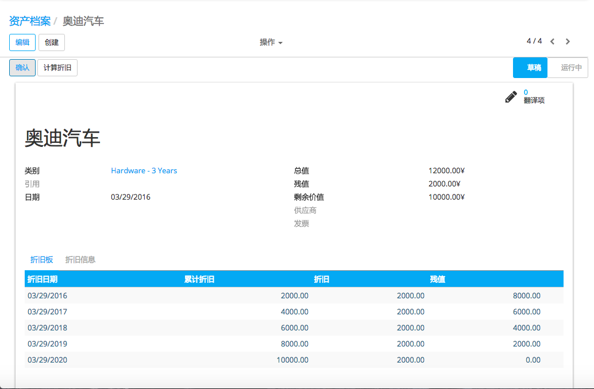

在 "资产" 模块，可以让你保持跟踪机械，土地和建筑物等固定资产。该模块可以自动生成每月的折旧项，获得折旧板，出售或处置资产，并对公司的资产产生报告。
举个例子，你可以买一辆车的$ 36,000个（总值），并且计划的期限平均摊销超过36个月（3年）。每月（周期），YuanCloud将创建一个折旧分录自动降低自己的资产价值由$ 1,000，并通过1000 $的费用。 3年后，该资产在资产负债表占$ 0（残值）。
不同类型的资产分为'资产类型'，描述了如何折旧资产。下面是资产类型的两个例子：
建筑：10年，按年直线折旧
汽车：5年，按月直线折旧
配置
安装资产模块
首先，安装资产模块。
一旦模块被安装了，你应该看到在财务应用程序了两个新的菜单：
在登记你的第一资产之前,您必须定义资产类型<accounting/adviser/assets_management/defining>`.
定义资产类型
资产类型用于配置资产的所有信息: 资产和弃用帐户、 摊销方法等。这样一来，顾问可以配置资产类型，用户可以进一步记录资产，而无需提供任何复杂的会计信息。他们只需要提供资产类型供应商条例草案 》。
您应当为每一个资产组你经常买喜欢中创建资产类型'汽车：5年'，'计算机硬件：3年'。对于所有其他资产，你可以创建通用的资产类型。根据资产的期限如'36个月'的名字他们，'10年'，...
要定义资产类型，进入
手动创建资产
要手动登记资产，进入菜单 。
一旦资产创建,别忘了确认一下。在确认资产前, 可以单击计算折旧按钮检查折旧。
小技巧
如果您手动创建的资产，你仍然需要建立供应商账单这一资产。资产文件只会产生折旧日记帐分录，而不是那些涉及到供应商账单。
字段的说明:
尝试创建一个*资产*我们的在线演示
从供应商票据自动创建资产
资产可以从供应商账单中自动创建。所有你需要做的是设置您的帐单上线的资产类别。当用户将验证票据，资产将被自动创建，使用供应商帐单的信息。
根据资产类别上的信息, 可直接生成草稿资产或是直接确认。直接生成确认的资产更容易,这样你不会忘记确认。(检查字段*跳过草案状态* 在*资产类别上*). 如果你想要在过账前检查你的资产, 可生成草稿资产.
小技巧
如果你把资产的产品，资产类别将自动填入该供应商的法案。
如何折旧资产？
YuanCloud将在合适的日期为每位确认资产自动创建折旧日记帐分录。 （不是那些草案）。您可以在贬值板控制：绿色圆点表示日记帐分录已经为这个系列创作。
但你也可以通过点击绿色子弹，迫使建立相关的折旧入境后的预产期前日记帐分录。
注解
在折旧板，点击红色子弹后日记帐分录。点击 Items 键在顶部，看看哪些是已经发布的日记帐分录。
如何修改现有的资产？
点击 Modify Depreciation
更改折旧次数
YuanCloud会自动重新计算一个新的折旧板。
如何记录出售或处置资产？
如果您出售或处置资产，则需要完全地贬低该资产。点击按钮 Sell or Dispose。这一行动将在本资产的全部成本，但它不会记录应通过客户发票登记的销售交易。